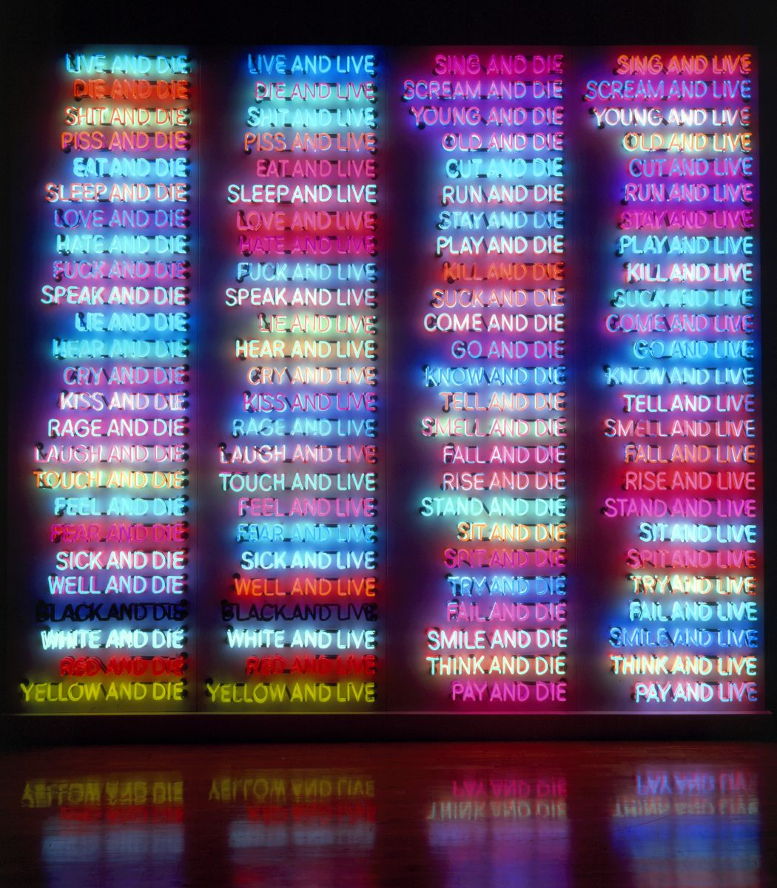

"Make fun of everything."
Bruce Nauman has spent half a century inventing forms to convey both the moral hazards and the thrill of being alive. Employing a tremendous range of materials and working methods, he reveals how mutable experiences of time, space, movement, and language provide an unstable foundation for understanding our place in the world. For Nauman, both making and looking at art involve “doing things that you don’t particularly want to do, putting yourself in unfamiliar situations, following resistances to find out why you’re resisting.” At a time when the notion of truth feels increasingly under attack, his work compels viewers to relinquish the safety of the familiar, keeping us alert, ever vigilant, and wary of being seduced by easy answers.

#1 One Hundred Live and Die (click for details)
#2 Life, Death, Love, Hate,
Pleasure, Pain (click for details)
#3 Human Nature/Life Death/
Knows Doesn't Know (click for details)